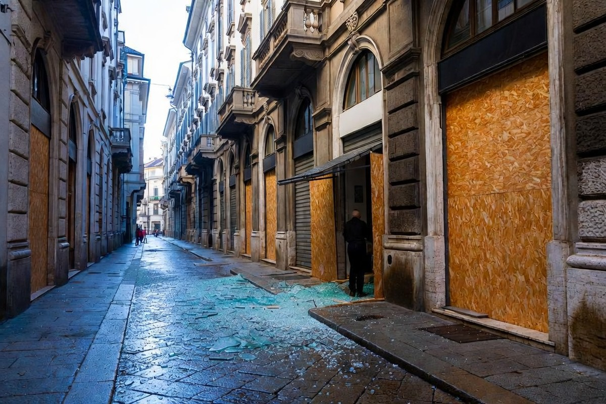

Politica italiana · 27 ottobre 2026
Albanese, le vetrine rotte di Milano e la formula «nega e defletti»

Francesca Albanese accusa chi racconta le proteste di negare e deviare l'attenzione. Ma nel suo post mancano i saccheggi e i danni, e una risposta del Riformista la cita con una parola che non ha scritto.
di Franco Zanghì
«Nega e defletti». Sono le parole che Francesca Albanese ha usato per accusare chi racconta le proteste di Milano. Rilette con attenzione, sono anche le parole che descrivono meglio il suo stesso post.
Il 20 ottobre, due giorni dopo i saccheggi nel centro della città, la relatrice speciale delle Nazioni Unite per i territori palestinesi occupati ha scritto sui social che «la stessa strategia mediatica usata per coprire i crimini in Palestina (nega e defletti)» viene usata «per oscurare le colpe di governanti che hanno rubato il futuro a milioni di italiani». E ha aggiunto che «dinanzi a proteste cariche di dolore, si parla di vetrine rotte, e si reprime ancora di più».
Che cosa manca nel post
Nel post non c'è chi ha spaccato le vetrine di via Orefici. Non c'è chi ha svuotato i negozi di Levi's e di Under Armour. Non c'è il milione di euro di danni stimato da Confcommercio Milano. C'è soltanto il dolore della piazza.
E la colpa di quelle vetrine, che pure da qualche parte dovrà stare, viene spostata sui governanti. La vetrina la rompe qualcuno in piazza, il conto arriva al governo. La formula di Albanese, rigirata a chi la usa, funziona benissimo.
I fatti di quel fine settimana, sabato 17 e domenica 18 ottobre, sono questi: una cinquantina di arresti, e soltanto 11 erano maggiorenni. Gli altri erano ragazzini. Chi ha spiegato a un ragazzino che sfondare una vetrina è una protesta carica di dolore? Chi gli ha detto che la colpa, alla fine, è sempre di qualcun altro?
L'appello per i fermati
Secondo l'agenzia Alanews, l'unica a riportarlo, nelle sue storie su Instagram Albanese ha rilanciato un post del centro sociale Lambretta. Era un'offerta di assistenza legale a chi era stato fermato in quei due giorni a Milano, e si chiudeva con «Tutti liberi, tutte libere!». Le parole sono del centro sociale, non sue.
L'assistenza legale è un diritto di tutti, anche di chi ha spaccato una vetrina. Ma se il racconto dell'agenzia è esatto, una relatrice delle Nazioni Unite che rilancia «tutti liberi» mentre in via Orefici i commercianti contano i danni dice da sola da che parte sta.
La risposta del Riformista e la parola in più
Venerdì 23 ottobre, sul Riformista, le ha risposto Barbara Saltamartini, ex deputata, che scrive da imprenditrice: quelle vetrine sono la vita degli altri, i risparmi, i prestiti in banca, gli stipendi da pagare a fine mese. Ha ragione.
Però l'ha citata con una parola in più: «solo vetrine rotte». Quel «solo», nel post di Albanese, non c'è: veniva dal titolo di un'agenzia. Chi critica il metodo degli altri il suo lo deve tenere pulito. Quella parola non serviva, e anzi regala ad Albanese l'appiglio per dire che le hanno messo in bocca cose mai dette. Il post vero bastava.
Che cosa resta
Resta una relatrice delle Nazioni Unite che dalla Palestina, dove il suo mandato ce l'ha, scende nelle strade di Milano e spiega che il problema non sono le vetrine, ma chi le racconta. Io sto dalla parte di chi la serranda la deve rialzare la mattina dopo, e anche dalla parte di chi in piazza ci va con un cartello e nient'altro, perché i primi a pagare quello che si rompe sono proprio loro.
Chi difende Albanese dice che lei i saccheggi non li ha mai giustificati e che parlava del racconto dei giornali, non dei fatti. Ed è vero: nel suo post la parola violenza non c'è. Ma è proprio questo il punto. Nega e defletti.
Fonti
- Ansa, «Albanese, proteste cariche di dolore ma si parla di vetrine rotte», 21 ottobre 2026
- Alanews, «Francesca Albanese critica i media dopo le proteste», 21 ottobre 2026
- Il Riformista, Barbara Saltamartini, «Francesca Albanese, le vetrine rotte sono la vita degli altri», 23 ottobre 2026
- L'Espresso, i danni a Milano secondo Confcommercio, 19 ottobre 2026
- La Regione, arresti e minorenni, 19 ottobre 2026
- Euronews, «Secondo giorno di scontri a Milano: vetrine distrutte e negozi saccheggiati», 18 ottobre 2026
La ricondivisione dell'appello del centro sociale Lambretta è riportata dalla sola Alanews. Il bilancio degli arresti era provvisorio.